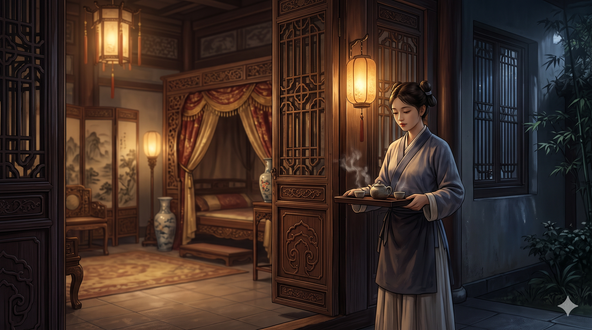
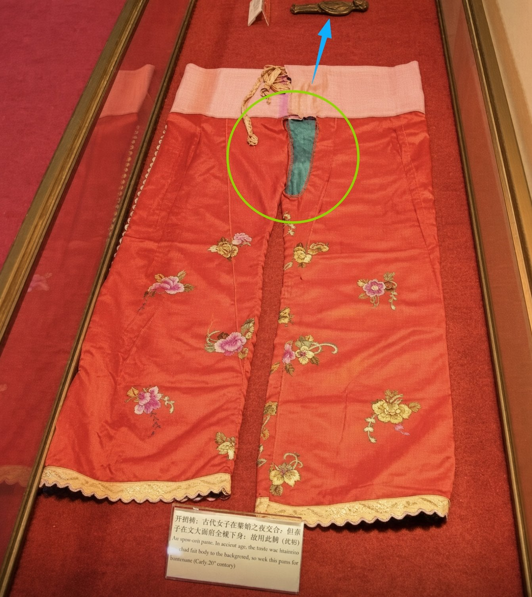

중국 사극이나 소설 같은 거 보다 보면 간간이 나오는 '통방계집(通房丫鬟, 퉁팡야환)'이라는 기묘한 신분이 있음.
주인이랑 잠자리도 같이 하길래 "아, 그냥 첩인가?" 싶지만,
실상은 첩은커녕 신분 상승조차 못한 채 밤낮으로 굴려지던 유서 깊은 '착취의 끝판왕'이었음.
이 불쌍한 여자들이 정확히 어떤 존재였는지 알아보자.
1. 이름이 왜 '통방(通房)'임?
글자 그대로 '방(房)이 주인의 침실과 통(通)해 있다'는 뜻임.
주인 부부 침실 바로 옆방이나 문턱에 상시 대기하면서, 밤중에 주인이 목마르다고 부르면 호다닥 물 떠 오고, 요강 비우고, 온갖 밤 시중을 들어야 했음.
거기에 주인이 "야, 오늘 이리 와라" 하면 잠자리 수발(수침)까지 들어야 했던... 사실상 야간 5분 대기조 + 성적 착취 대상이었음.
지금으로 치면 퇴근 없는 24시간 풀타임 강제 야근이라고 보면 됨.

2. 첩이랑 뭐가 다른데?
"어쨌든 주인이랑 잠자리도 하는데 대접은 잘 받았겠지?" 싶겠지만, 둘은 티어 자체가 완전히 다름.
이낭 (姨娘, 첩실):
그래도 족보에 이름 올라가는 '반(半)주인'임.
독방(처소) 제공되고, 손에 물 한 방울 안 묻히게 가사 노동 면제임. 무엇보다 자기를 모시는 전담 하녀가 따로 딸려 나오는 '마님' 포지션임.
통방계집:
그런 거 없고 그냥 '하녀(노비)'임.
낮에는 빨래, 청소, 바느질 등 허드렛일 빡세게 하고 밤에는 불려 가서 수침 들어야 함. 주인마님이 기분 나쁘면 언제든 매질해서 쫓아내거나 다른 데 팔아넘겨도 법적으로 아무 문제 없는 그냥 '재산'이었음.

통방계집이 입는 바지나 치마는 가랑이 부분에 구멍이 나 있는 게 많았는데 벗기지 않아도 한판 하기위한 구멍 맞음..
3. 이 사람들은 도대체 어디서 옴?
크게 두 가지 루트였음.
* 부인의 혼수품(몸종):
본처가 시집올 때 친정에서 데려온 최측근 몸종(배가아환) 중에서 주로 픽업함.
본처 입장에서도 남편이 밖에서 굴러먹던 딴 여자 데려와서 첩 삼는 꼴을 보느니, 차라리 자기 말 잘 듣고 통제하기 쉬운 자기 몸종을 남편 침실에 밀어 넣는 게 안방 단속에 이득이었기 때문.
도련님 성교육 및 시중용:
금수저 집안 도련님이 장가가기 전에 "우리 아들 연애랑 성교육은 여기서 하렴" 하면서 집안 어른들이 미리 붙여준 하녀들이 자연스럽게 통방계집 테크를 탔음.
4. 신분 상승의 기회는 있었을까?
통방계집이 이 노예 지옥에서 탈출할 유일한 로또는 딱 하나, '아들 출산'이었음.
주인의 총애를 오지게 받거나 운 좋게 임신해서 아들을 낳으면, 비로소 집안의 정식 첩(이낭)으로 승격시켜 줬음.
이게 하녀 신분으로 올라갈 수 있는 인생 최대의 성공 가도였음.
하지만 대다수는 본처의 질투와 학대 속에서 애도 못 낳고 쥐도 새도 모르게 쫓겨나거나, 나이 차면 다른 집 노비한테 강제로 시집보내지는 등 비참한 엔딩이 대다수였다고 함...
3줄 요약:
1. 통방계집은 밤낮으로 쥐어짜이면서 신분은 여전히 '노비'였던 24시간 대기조.
2. 첩(이낭)은 2등 '주인'이었지만, 통방계집은 그냥 하녀 + 성노예였음
3. 아들 낳고 첩으로 승격하는 게 유일한 생존 루트였던 고대 가부장제의 씁쓸한 현실.
조선 여자 노비들도 비슷했을꺼 같은데 반반한사람 뽑아다가 저런짓 시켰을듯